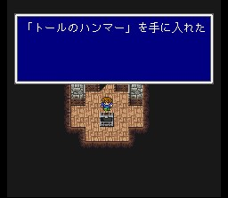
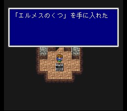
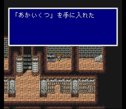
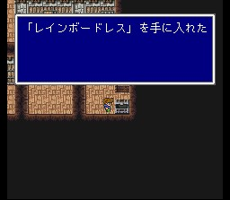
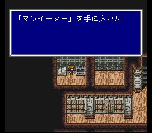

차원성
이 근처는 경험치가 가장 빨리 오르는 곳이지만, 들어가기가 까다로운 것이 단점이지요. 차원성 들어가서 지하로 가면 왼쪽에 청마법의 왕, 아포카료포스가 있습니다. 거의 안 쓰는 청마법이 없다시피 합니다. 초특급 귀중품인 거인의 장갑을 가지고 있으니, 뜻이 있다면 리턴 난무를 해대게 될 듯.. 독에 약하니 독으로 공격하면 금방 끝납니다.
오른쪽에 큰 눈알같이 생긴 녀석은 카타스트로피입니다. 이 녀석의 특징은 누군가가 레비테트를 쓰면, 중력100으로 무효화를 시킨다는 것입니다. 그것을 이용하여 한 사람이 계속 레비테트를 쓰고 나머지는 공격하면, 공격 한번 못해보고 중력100만 쓰다가 죽습니다.
감옥 안에 있는 할아버지들은 쥬라에이비스로 변신을 합니다. 이 녀석들은 참철검이 먹히지만.. 가능하면 비룡의 창을 많이 훔쳐둡시다. 최강의 창으로 드래곤에게 특히 강합니다. 나중에 신룡 상대할 때 필수입니다.
감옥 안에 갇혀 있던 여자가 본색을 드러내어 하리카리낫소스로 변합니다. 개구리 마법을 쓰니 회복수단을 준비하시고, 소환마법이나 마법으로 공격하면 강력한 기술로 반격하므로 마법검 프레아 난타가 효과적입니다.
성 최상층에 가면 트윈타니아가 기다립니다. 이 녀석을 잡기 전에 한참 고민하게 되는데.. 중간에 몇 턴을 거쳐 기가프레아를 충전합니다. 이 충전 메시지가 뜨기 전에 잡으면 굉장히 낮은 확률로 최강 벨인 팅커벨이 나오는데, 1개밖에 나오지 않는, FF5에서 가장 얻기 어려운 아이템으로 꼽힙니다. 충전상태에서는 거인의 도끼를 가지고 있고 무라사메를 전리품으로 줍니다만.. 아무튼 불, 성속성이 약점이며, 기가프레아 파워업! 순간에 참철검이나 데스를 소환하면 일격에 죽습니다.